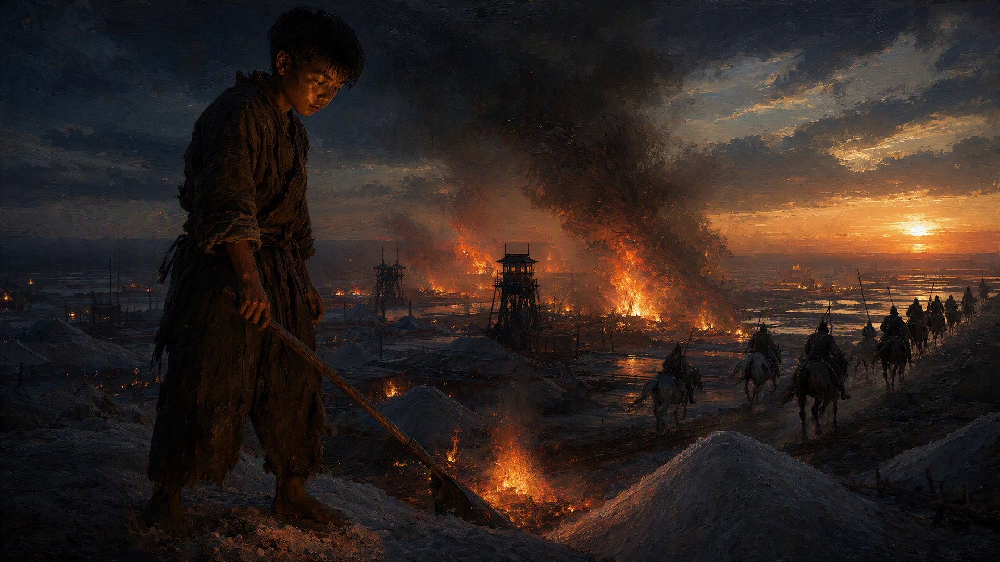

火烧盐场

顾盐官来百曲那天，带了两个账房，一抬算盘，还有一封信。
信是火焱的状纸，隆平府压了三天，批回来了。顾盐官坐在茶棚里，先看账本，再看布——海妹她娘连夜纺的三匹棉布，白生生地摊在桌上，纹路细密，像一片片云。
“这布，是百曲纺的？”顾盐官捻起布角，对着光看了又看。
“是。”火焱说，“乌泥泾的法子，搅车轧籽，三锭纺车。大人您看这布——纹是纹，道是道，卖到松江城，一匹少说值二百文。”
“二百文……”顾盐官拨了一下算盘珠子，“一户妇人，一日纺多少？”
“熟手一日一匹。”火焱说，“百曲有灶户一百二十户，妇人过半。大人您算算——一年下来，光是布税，够隆平府添多少兵？”
顾盐官没说话，只把算盘珠子拨得噼啪响。
火焱心里有数了。账房最怕的，是税源断了；最爱的，是新税源。他这盘账，顾盐官拨不出去。
“好。”顾盐官终于合上算盘，“火家的册子，本官替你们压下去了。棉盐并举，百曲先行——回去，本官就向府里递新政。”
他顿了顿，压低声音补了一句：
“至于那份'来历不明'的册子，本官替你烧了。小施主，回去告诉你爹——盐课是盐课，人头是人头，别的东西，莫要沾。”
火焱心里一凛，面上却笑得乖巧：“多谢大人。火家是灶户，只认灶，只认盐，别的，一概不知。”
顾盐官意味深长地看了他一眼，走了。
可火焱知道，这事没完。
顾盐官压得下官面，压不下脱里不花。那是个吃过亏的孤狼，官面输了，就一定会走野路——而且会抢在顾盐官的新政落地之前动手。因为新政一落地，火家就成了隆平府的“政绩”，他就再也没机会了。
“海妹，”当天夜里，火焱蹲在灶前，忽然问，“废团那边，脱里不花还有多少人？”
“上回烧了五条船，他学精了。”海妹说，“我爹去周浦卖盐，听人说废团又聚了一伙，三四十号，刀都磨亮了。”
“三四十号。”火焱往灶膛里添了根柴，“他们什么时候动手？”
“我估摸着，就这两夜。”海妹说，“我爹说，盐课新政要落地的事，周浦都传遍了。脱里不花再不动手，就真没机会了。”
“好。”火焱站起来，“那咱们就等他动手。”
“等他？”海妹瞪大眼睛，“火家哥儿，三四十号带刀的，你等他来烧你家的灶？”
“不。”火焱说，“等他来抢盐。”
他顿了顿，压低声音：“海妹，你去跟村里说——明日起，各家把盐都搬出来，堆到废团那边去。”
“废团？！那是脱里不花的场子！”
“所以才要堆过去。”火焱说，“脱里不花要抢盐，抢的是百曲的盐。盐在百曲，他就要进百曲烧村；盐在废团，他就会去废团抢盐——然后，咱们把废团，点了。”
海妹愣了半天，忽然倒吸一口凉气：“火家哥儿，你要烧了废团？”
“烧。”火焱说，火光在他眼里一跳，“废团是他的场子，他的私盐，他的人。一把火，烧干净——烧完之后，隆平府问起来，是'私盐囤积，夜中走火'，跟火家一纹钱的关系都没有。”
“可……可那不是自家的盐吗？”
“盐是死的。”火焱说，“烧·掉的，是脱里不花。只要他没了，盐，还能再熬。”
第三夜，废团。
脱里不花带着人摸进废团盐场的时候，月亮被云遮得严严实实。
场院里堆着一垛垛盐包，码得整整齐齐——像是一仓没人看管的肥肉。脱里不花站在院门口，看着那垛盐，忽然觉得哪里不对。
太静了。静得像一口填满了柴的灶。
“老九，”他压低声音，“你先带几个人进去，看看盐包底下——”
“轰！”
话没说完，最外面那垛盐包底下，腾起一团火。
火苗顺着盐包底下铺的引线，眨眼间蹿成一片。那不是盐，是盐包——底下垫着干柴的盐包，浇了火油，一碰就着。
“撤！快撤！”脱里不花嘶声喊。
晚了。
废团的四面土墙外，齐刷刷亮起一片火把。百曲的灶户们，扛着柴刀、火钩、铁锅，把整个废团围了个水泄不通。外围，海妹站在高处，看准风向，喊了一声：
“风起了！往东刮！”
火，呼地卷向东边——东边，是废团唯一的出口。
出口外，火焱一个人站着。九岁的身量，手里攥着一根火绳，火绳那头，连着废团粮仓门口浇了油的门槛。
“脱里不花。”他站在火光里，声音不大，却穿过整片火场，“你的私盐，我替你烧了；你的人，我替你围了。你要是还想活，扔刀，出来，我放你一条路。”
火场里静了一瞬，然后是骂声，是刀碰铁的响动，是惨嚎——脱里不花的人想冲出去，被火墙挡了回来，又被灶户们的柴刀拍了回去。
脱里不花没出来。
他劈开两个挡路的灶户，从火墙最薄的地方杀出一条血路——半边身子烧着了，头发燎得焦黑，怀里死死抱着一个包袱，跌跌撞撞冲出废团，往南狂奔。
“别追了。”火焱拦住要追的灶户，“让他走。”
“火家哥儿！他跑了——”
“他跑不远的。”火焱看着那道越来越远的黑影，“一个烧成焦炭的盐枭，隆平府不会再收他，元廷也不会认他。他的路，断了。”
他转过身，看着废团里烧成一片火海。
火，烧红了半边天。场院里那口熬盐的大铁盘，被火烤得通红，边缘慢慢软化，一滴铁水，缓缓滴落，在地上凝成一颗暗红的珠子。
火焱蹲下去，捡起那颗铁珠，指尖烫得生疼，却没扔。
“铁都烧化了……”他喃喃地说，看着那颗铁珠在掌心慢慢冷却，“老祖宗，你传的这火，再往上，是不是就叫熔金？”
系统之声在他耳边响起，带着一丝笑意：
【支线达成：火烧盐场】
脱里不花势力覆灭，私盐据点焚毁，隆平府盐课新政落地在即。
提示：赤火九转·第三转·熔金——火可融铁，匠造之极。铁盘已熔，熔金之境，不远矣。
火焱把那颗铁珠收进怀里，转身往回走。
身后，废团的火还在烧，映得百曲的夜空一片橘黄。灶户们扛着柴刀往回走，一路说笑，像打完一场丰收的仗。海妹跑过来，手里还攥着那把看风向的草标：“火家哥儿，废团烧了，那些铁盘——”
“铁盘留着。”火焱说，“等火烧完了，凉了，搬回百曲。往后咱们自己煮盐，用不着下沙场的旧铁盘了。”
“自己煮？”海妹眼睛一亮，“火家哥儿，你要开自己的盐场？”
“不叫盐场。”火焱说，火光映着他九岁的脸，眼睛亮得像两颗烧红的炭，“叫灶火号。”
他顿了顿：
“从今往后，百曲的盐，百曲的布，百曲的船——都从这一口灶里，烧出来。”
晨光里，废团的余烬还冒着青烟。百曲的灶烟，一缕一缕，笔直地升向天空。
脱里不花消失了。火家，立住了。
可火焱知道，这只是开始。
他摸着怀里那颗铁珠，望向北边——扬州的方向。
“老祖宗的弓，还在河底等着呢。”
· 本章完 ·